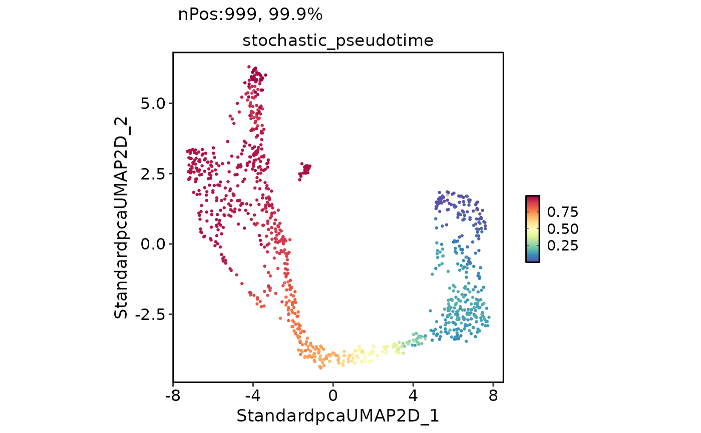
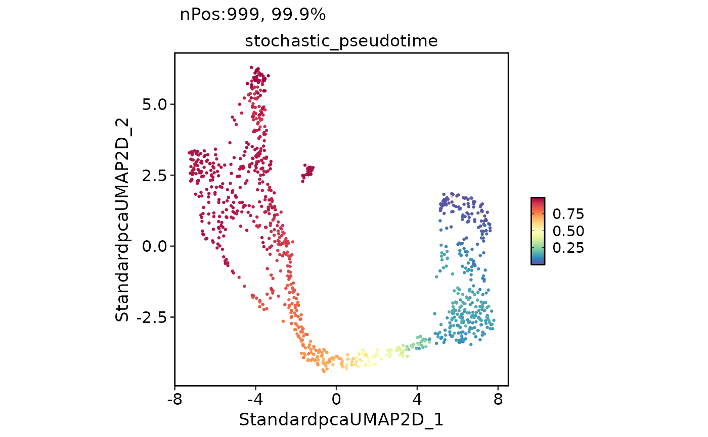

scVelo is a scalable toolkit for RNA velocity analysis in single cells. This function runs an enhanced scVelo workflow on a Seurat object with improved error handling, version compatibility, and modular design.
Usage
RunSCVELO(
srt = NULL,
assay_x = "RNA",
layer_x = "counts",
assay_y = c("spliced", "unspliced"),
layer_y = "counts",
adata = NULL,
group_by = NULL,
linear_reduction = NULL,
nonlinear_reduction = NULL,
basis = NULL,
mode = "stochastic",
fitting_by = "stochastic",
magic_impute = FALSE,
knn = 5,
t = 2,
min_shared_counts = 30,
n_pcs = 30,
n_neighbors = 30,
filter_genes = TRUE,
min_counts = 3,
min_counts_u = 3,
normalize_per_cell = TRUE,
log_transform = TRUE,
use_raw = FALSE,
diff_kinetics = FALSE,
stream_smooth = NULL,
stream_density = 2,
arrow_length = 5,
arrow_size = 5,
arrow_density = 0.5,
denoise = FALSE,
denoise_topn = 3,
kinetics = FALSE,
kinetics_topn = 100,
calculate_velocity_genes = FALSE,
compute_velocity_confidence = TRUE,
compute_terminal_states = TRUE,
compute_pseudotime = TRUE,
compute_paga = TRUE,
top_n = 6,
n_jobs = 1,
palette = "Paired",
palcolor = NULL,
show_plot = TRUE,
save = FALSE,
dpi = 300,
dirpath = "./",
fileprefix = "",
return_seurat = !is.null(srt)
)Arguments
- srt
A Seurat object.
- assay_x
Assay to convert in the anndata object.
- layer_x
Layer name for
assay_xin the Seurat object.- assay_y
Assay to convert in the anndata object.
- layer_y
Layer names for the
assay_yin the Seurat object.- adata
An anndata object.
- group_by
Variable to use for grouping cells in the Seurat object.
- linear_reduction
Linear reduction method to use, e.g.,
"PCA".- nonlinear_reduction
Non-linear reduction method to use, e.g.,
"UMAP".- basis
The basis to use for reduction, e.g.,
"UMAP".- mode
Velocity estimation models to use. Can be a vector containing
"deterministic","stochastic", and/or"dynamical".- fitting_by
Method used to fit gene velocities for dynamical modeling, e.g., "stochastic".
- magic_impute
Flag indicating whether to perform magic imputation.
- knn
The number of nearest neighbors for
magic.MAGIC.- t
power to which the diffusion operator is powered for
magic.MAGIC.Minimum number of counts (both unspliced and spliced) required for a gene.
- n_pcs
Number of principal components (PCs) used for velocity estimation.
- n_neighbors
Number of nearest neighbors used for velocity estimation.
- filter_genes
Whether to filter genes based on minimum counts.
- min_counts
Minimum counts for gene filtering.
- min_counts_u
Minimum unspliced counts for gene filtering.
- normalize_per_cell
Whether to normalize counts per cell.
- log_transform
Whether to apply log transformation.
- use_raw
Whether to use raw data for dynamical modeling.
- diff_kinetics
Whether to use differential kinetics.
- stream_smooth
Multiplication factor for scale in Gaussian kernel around grid point.
- stream_density
Controls the closeness of streamlines. When density = 2 (default), the domain is divided into a 60x60 grid, whereas density linearly scales this grid. Each cell in the grid can have, at most, one traversing streamline.
- arrow_length
Length of arrows.
- arrow_size
Size of arrows.
- arrow_density
Amount of velocities to show.
- denoise
Boolean flag indicating whether to denoise.
- denoise_topn
Number of genes with highest likelihood selected to infer velocity directions.
- kinetics
Boolean flag indicating whether to estimate RNA kinetics.
- kinetics_topn
Number of genes with highest likelihood selected to infer velocity directions.
- calculate_velocity_genes
Boolean flag indicating whether to calculate velocity genes.
- compute_velocity_confidence
Whether to compute velocity confidence metrics.
- compute_terminal_states
Whether to compute terminal states (root and end points).
- compute_pseudotime
Whether to compute velocity pseudotime.
- compute_paga
Whether to compute PAGA (Partition-based graph abstraction).
- top_n
The number of top features to plot.
- n_jobs
The number of parallel jobs to run.
- palette
The palette to use for coloring cells.
- palcolor
A vector of colors to use as the palette.
- show_plot
Whether to show the plot.
- save
Whether to save the plots.
- dpi
The DPI (dots per inch) for saving the plot.
- dirpath
The directory to save the plots.
- fileprefix
The file prefix to use for the plots.
- return_seurat
Whether to return a Seurat object instead of an anndata object. Default is
TRUE.
Examples
PrepareEnv()
#> ℹ [2025-08-26 04:29:06] Preparing scop Python Environment
#> ℹ [2025-08-26 04:29:06] Environment name: scop_env
#> ℹ [2025-08-26 04:29:06] Python version: 3.10-1
#> ℹ [2025-08-26 04:29:06] Number of packages to install: 21
#> ℹ [2025-08-26 04:29:06] Auto-detecting conda...
#> ℹ [2025-08-26 04:29:07] Using existing environment: /usr/share/miniconda/envs/scop_env
#> ℹ [2025-08-26 04:29:07] Checking and installing required packages...
#> ℹ [2025-08-26 04:29:07] Installing conda packages
#> ℹ [2025-08-26 04:29:08] Checking 2 packages in environment: scop_env
#> ℹ [2025-08-26 04:29:09] Retrieving package list for environment: scop_env
#> ℹ [2025-08-26 04:29:11] Found 194 packages installed
#> ✔ [2025-08-26 04:29:11] leidenalg 0.10.2
#> ✔ [2025-08-26 04:29:11] tbb 2022.2.0
#> ℹ [2025-08-26 04:29:11] Installing pip packages
#> ℹ [2025-08-26 04:29:12] Checking 19 packages in environment: scop_env
#> ℹ [2025-08-26 04:29:13] Retrieving package list for environment: scop_env
#> ℹ [2025-08-26 04:29:15] Found 194 packages installed
#> ! [2025-08-26 04:29:15] igraph found but version mismatch: installed 0.10.16, required 0.11.9
#> ✔ [2025-08-26 04:29:15] matplotlib 3.10.3
#> ✔ [2025-08-26 04:29:15] numba 0.59.1
#> ✔ [2025-08-26 04:29:15] llvmlite 0.42.0
#> ✔ [2025-08-26 04:29:15] numpy 1.26.4
#> ✔ [2025-08-26 04:29:15] palantir 1.4.1
#> ✔ [2025-08-26 04:29:15] pandas 2.0.3
#> ✔ [2025-08-26 04:29:15] scanpy 1.11.3
#> ✔ [2025-08-26 04:29:15] scikit-learn 1.7.0
#> ✔ [2025-08-26 04:29:15] scipy 1.15.3
#> ✔ [2025-08-26 04:29:15] scvelo 0.3.3
#> ✔ [2025-08-26 04:29:15] wot 1.0.8.post2
#> ✔ [2025-08-26 04:29:15] trimap 1.1.4
#> ✔ [2025-08-26 04:29:15] pacmap 0.8.0
#> ✔ [2025-08-26 04:29:15] phate 1.0.11
#> ✔ [2025-08-26 04:29:15] bbknn 1.6.0
#> ✔ [2025-08-26 04:29:15] scanorama 1.7.4
#> ✔ [2025-08-26 04:29:15] scvi-tools 1.2.1
#> ✔ [2025-08-26 04:29:15] cellrank 2.0.7
#> ℹ [2025-08-26 04:29:15] Try to install: igraph==0.11.9
#> ℹ [2025-08-26 04:29:15] Installing 2 packages into environment: scop_env
#> ℹ [2025-08-26 04:29:16] Installing packages via pip...
#> ✔ [2025-08-26 04:29:18] pip installation completed
#> ℹ [2025-08-26 04:29:18] Checking 19 packages in environment: scop_env
#> ℹ [2025-08-26 04:29:19] Retrieving package list for environment: scop_env
#> ℹ [2025-08-26 04:29:21] Found 194 packages installed
#> ! [2025-08-26 04:29:21] igraph found but version mismatch: installed 0.10.16, required 0.11.9
#> ✔ [2025-08-26 04:29:21] matplotlib 3.10.3
#> ✔ [2025-08-26 04:29:21] numba 0.59.1
#> ✔ [2025-08-26 04:29:21] llvmlite 0.42.0
#> ✔ [2025-08-26 04:29:21] numpy 1.26.4
#> ✔ [2025-08-26 04:29:21] palantir 1.4.1
#> ✔ [2025-08-26 04:29:21] pandas 2.0.3
#> ✔ [2025-08-26 04:29:21] scanpy 1.11.3
#> ✔ [2025-08-26 04:29:21] scikit-learn 1.7.0
#> ✔ [2025-08-26 04:29:21] scipy 1.15.3
#> ✔ [2025-08-26 04:29:21] scvelo 0.3.3
#> ✔ [2025-08-26 04:29:21] wot 1.0.8.post2
#> ✔ [2025-08-26 04:29:21] trimap 1.1.4
#> ✔ [2025-08-26 04:29:21] pacmap 0.8.0
#> ✔ [2025-08-26 04:29:21] phate 1.0.11
#> ✔ [2025-08-26 04:29:21] bbknn 1.6.0
#> ✔ [2025-08-26 04:29:21] scanorama 1.7.4
#> ✔ [2025-08-26 04:29:21] scvi-tools 1.2.1
#> ✔ [2025-08-26 04:29:21] cellrank 2.0.7
#> ! [2025-08-26 04:29:21] Failed to install: igraph==0.11.9 into the environment scop_env. Please install manually
#> ✔ [2025-08-26 04:29:23] Python Environment Ready
#> conda environment:
#> conda: /usr/share/miniconda/bin/conda
#> environment: /usr/share/miniconda/envs/scop_env
#> python config:
#> python: /usr/share/miniconda/envs/scop_env/bin/python3.10
#> libpython: /usr/share/miniconda/envs/scop_env/lib/libpython3.10.so
#> pythonhome: /usr/share/miniconda/envs/scop_env:/usr/share/miniconda/envs/scop_env
#> version: 3.10.1 | packaged by conda-forge | (main, Dec 22 2021, 01:39:36) [GCC 9.4.0]
#> numpy: /usr/share/miniconda/envs/scop_env/lib/python3.10/site-packages/numpy
#> numpy_version: 1.26.4
#>
#> NOTE: Python version was forced by use_python() function
data(pancreas_sub)
pancreas_sub <- RunSCVELO(
srt = pancreas_sub,
assay_x = "RNA",
group_by = "SubCellType",
linear_reduction = "PCA",
nonlinear_reduction = "UMAP"
)
#> ℹ [2025-08-26 04:29:25] Checking 1 packages in environment: scop_env
#> ℹ [2025-08-26 04:29:26] Retrieving package list for environment: scop_env
#> ℹ [2025-08-26 04:29:28] Found 194 packages installed
#> ✔ [2025-08-26 04:29:28] scvelo version: 0.3.3
#> ℹ [2025-08-26 04:29:31] Checking 2 packages in environment: scop_env
#> ℹ [2025-08-26 04:29:31] Retrieving package list for environment: scop_env
#> ℹ [2025-08-26 04:29:33] Found 194 packages installed
#> ✔ [2025-08-26 04:29:33] scanpy version: 1.11.3
#> ✔ [2025-08-26 04:29:33] numpy version: 1.26.4
#> ℹ [2025-08-26 04:29:33] Converting <Seurat> object to <AnnData> object...
#> ! [2025-08-26 04:29:34] "misc" slot is not converted
#> ! [2025-08-26 04:29:34] "tools" slot is not converted
#> ✔ [2025-08-26 04:29:34] Convert <Seurat> object to <AnnData> object completed
#> ℹ [2025-08-26 04:29:34] Running scVelo analysis...
#> ✔ [2025-08-26 04:29:40] scVelo analysis completed
#> ℹ [2025-08-26 04:29:40] Converting <AnnData> object to <Seurat> object...
#> ✔ [2025-08-26 04:29:45] Convert <AnnData> object to <Seurat> object completed
#> ℹ [2025-08-26 04:29:45] Get expression data from <Assay> object
#> Warning: Different features in new layer data than already exists for counts
#> ℹ [2025-08-26 04:29:46] Get expression data from <Assay> object
#> Warning: Different features in new layer data than already exists for data
#> ℹ [2025-08-26 04:29:46] Get expression data from <Assay> object
#> ℹ [2025-08-26 04:29:46] Get expression data from <Assay> object
#> ℹ [2025-08-26 04:29:46] Get expression data from <Assay> object
#> ℹ [2025-08-26 04:29:47] Get expression data from <Assay> object
#> ℹ [2025-08-26 04:29:47] Get expression data from <Assay> object
#> ℹ [2025-08-26 04:29:47] Get expression data from <Assay> object
#> ℹ [2025-08-26 04:29:47] Get expression data from <Assay> object
#> ℹ [2025-08-26 04:29:47] Get expression data from <Assay> object
#> ℹ [2025-08-26 04:29:48] Get expression data from <Assay> object
#> ℹ [2025-08-26 04:29:48] Get expression data from <Assay> object
head(pancreas_sub[[]])
#> orig.ident nCount_RNA nFeature_RNA S_score G2M_score
#> AAACCTGAGCCTTGAT SeuratProject 7071 2613 -0.01470664 -0.23261042
#> AAACCTGAGGCAATTA SeuratProject 4070 1984 -0.17125480 -0.28683382
#> AAACCTGTCTTTCCTC SeuratProject 9592 3410 0.55623430 -0.05274934
#> AAACGGGAGATATGGT SeuratProject 6194 2486 -0.16794573 -0.16668808
#> AAACGGGCAAGGACAC SeuratProject 10490 3281 0.21798572 0.68136787
#> AAACGGGCAGTTCCCT SeuratProject 6342 2430 -0.15680908 -0.16858186
#> nCount_spliced nFeature_spliced nCount_unspliced
#> AAACCTGAGCCTTGAT 7071 2613 959
#> AAACCTGAGGCAATTA 4070 1984 1076
#> AAACCTGTCTTTCCTC 9592 3410 1339
#> AAACGGGAGATATGGT 6194 2486 728
#> AAACGGGCAAGGACAC 10490 3281 1441
#> AAACGGGCAGTTCCCT 6342 2430 1113
#> nFeature_unspliced CellType SubCellType Phase
#> AAACCTGAGCCTTGAT 643 Ductal Ductal G1
#> AAACCTGAGGCAATTA 701 Endocrine Alpha G1
#> AAACCTGTCTTTCCTC 894 Ductal Ductal S
#> AAACGGGAGATATGGT 556 Ductal Ductal G1
#> AAACGGGCAAGGACAC 1008 Ductal Ductal G2M
#> AAACGGGCAGTTCCCT 808 Ductal Ductal G1
#> initial_size_unspliced initial_size_spliced initial_size
#> AAACCTGAGCCTTGAT 959 7071 7071
#> AAACCTGAGGCAATTA 1076 4070 4070
#> AAACCTGTCTTTCCTC 1339 9592 9592
#> AAACGGGAGATATGGT 728 6194 6194
#> AAACGGGCAAGGACAC 1441 10490 10490
#> AAACGGGCAGTTCCCT 1113 6342 6342
#> n_counts stochastic_self_transition stochastic_length
#> AAACCTGAGCCTTGAT 5486.269 0.3155556 4.60
#> AAACCTGAGGCAATTA 5494.569 0.2847285 4.24
#> AAACCTGTCTTTCCTC 5480.638 0.3086748 3.38
#> AAACGGGAGATATGGT 5506.151 0.2174850 5.91
#> AAACGGGCAAGGACAC 5451.386 0.3256395 3.62
#> AAACGGGCAGTTCCCT 5460.762 0.1913528 6.25
#> stochastic_confidence stochastic_confidence_transition
#> AAACCTGAGCCTTGAT 0.8105986 0.04213599
#> AAACCTGAGGCAATTA 0.6393389 0.17558804
#> AAACCTGTCTTTCCTC 0.7320255 0.06149908
#> AAACGGGAGATATGGT 0.8784857 0.09312928
#> AAACGGGCAAGGACAC 0.8402821 0.05744177
#> AAACGGGCAGTTCCCT 0.8089445 0.09533910
#> stochastic_root_cells stochastic_end_points
#> AAACCTGAGCCTTGAT 0.0000000 1.888816e-04
#> AAACCTGAGGCAATTA 0.0000000 6.779892e-06
#> AAACCTGTCTTTCCTC 0.8916813 9.607497e-06
#> AAACGGGAGATATGGT 0.0000000 1.560016e-04
#> AAACGGGCAAGGACAC 0.5867691 2.788242e-06
#> AAACGGGCAGTTCCCT 0.0000000 7.363875e-05
#> stochastic_pseudotime nCount_Ms nFeature_Ms nCount_Mu
#> AAACCTGAGCCTTGAT 0.041877169 5496.481 9165 1177.817
#> AAACCTGAGGCAATTA 0.874451816 5467.599 8223 1178.245
#> AAACCTGTCTTTCCTC 0.006806958 5481.050 8640 1177.902
#> AAACGGGAGATATGGT 0.097086459 5484.107 9128 1177.216
#> AAACGGGCAAGGACAC 0.004860906 5447.984 9322 1179.946
#> AAACGGGCAGTTCCCT 0.110132761 5469.191 8465 1179.289
#> nFeature_Mu nCount_velocity nFeature_velocity
#> AAACCTGAGCCTTGAT 7492 149.12176 4182
#> AAACCTGAGGCAATTA 6652 -41.73723 3542
#> AAACCTGTCTTTCCTC 6412 124.24095 3814
#> AAACGGGAGATATGGT 7629 192.08703 4335
#> AAACGGGCAAGGACAC 8126 167.57752 4522
#> AAACGGGCAGTTCCCT 6205 206.12627 3990
#> nCount_variance_velocity nFeature_variance_velocity
#> AAACCTGAGCCTTGAT 35.48920 339
#> AAACCTGAGGCAATTA -214.70548 171
#> AAACCTGTCTTTCCTC 72.66496 383
#> AAACGGGAGATATGGT 25.55309 315
#> AAACGGGCAAGGACAC 94.80325 535
#> AAACGGGCAGTTCCCT 33.38207 285
#> nCount_stochastic nFeature_stochastic
#> AAACCTGAGCCTTGAT 149.12176 4182
#> AAACCTGAGGCAATTA -41.73723 3542
#> AAACCTGTCTTTCCTC 124.24095 3814
#> AAACGGGAGATATGGT 192.08703 4335
#> AAACGGGCAAGGACAC 167.57752 4522
#> AAACGGGCAGTTCCCT 206.12627 3990
#> nCount_variance_stochastic nFeature_variance_stochastic
#> AAACCTGAGCCTTGAT 35.48920 339
#> AAACCTGAGGCAATTA -214.70548 171
#> AAACCTGTCTTTCCTC 72.66496 383
#> AAACGGGAGATATGGT 25.55309 315
#> AAACGGGCAAGGACAC 94.80325 535
#> AAACGGGCAGTTCCCT 33.38207 285
names(pancreas_sub@assays)
#> [1] "RNA" "spliced" "unspliced"
#> [4] "Ms" "Mu" "velocity"
#> [7] "variance_velocity" "stochastic" "variance_stochastic"
FeatureDimPlot(
pancreas_sub,
c("stochastic_length", "stochastic_confidence")
)
 FeatureDimPlot(
pancreas_sub,
"stochastic_pseudotime"
)

VelocityPlot(
pancreas_sub,
reduction = "UMAP",
plot_type = "stream"
)
FeatureDimPlot(
pancreas_sub,
"stochastic_pseudotime"
)

VelocityPlot(
pancreas_sub,
reduction = "UMAP",
plot_type = "stream"
)
 CellDimPlot(
pancreas_sub,
group.by = "SubCellType",
reduction = "UMAP",
pt.size = NA,
velocity = "stochastic"
)
#> Warning: No shared levels found between `names(values)` of the manual scale and the
#> data's fill values.
#> Warning: Removed 1000 rows containing missing values or values outside the scale range
#> (`geom_point()`).
#> Warning: No shared levels found between `names(values)` of the manual scale and the
#> data's fill values.
#> Warning: Removed 1000 rows containing missing values or values outside the scale range
#> (`geom_point()`).
#> Warning: Removed 3 rows containing missing values or values outside the scale range
#> (`geom_segment()`).
CellDimPlot(
pancreas_sub,
group.by = "SubCellType",
reduction = "UMAP",
pt.size = NA,
velocity = "stochastic"
)
#> Warning: No shared levels found between `names(values)` of the manual scale and the
#> data's fill values.
#> Warning: Removed 1000 rows containing missing values or values outside the scale range
#> (`geom_point()`).
#> Warning: No shared levels found between `names(values)` of the manual scale and the
#> data's fill values.
#> Warning: Removed 1000 rows containing missing values or values outside the scale range
#> (`geom_point()`).
#> Warning: Removed 3 rows containing missing values or values outside the scale range
#> (`geom_segment()`).
 data(pancreas_sub)
pancreas_sub <- RunSCVELO(
pancreas_sub,
assay_x = "RNA",
group_by = "SubCellType",
linear_reduction = "PCA",
nonlinear_reduction = "UMAP",
mode = c("deterministic", "stochastic"),
filter_genes = TRUE,
min_counts = 5,
compute_velocity_confidence = TRUE,
compute_terminal_states = TRUE,
compute_pseudotime = TRUE,
compute_paga = TRUE
)
#> ℹ [2025-08-26 04:29:51] Checking 1 packages in environment: scop_env
#> ℹ [2025-08-26 04:29:52] Retrieving package list for environment: scop_env
#> ℹ [2025-08-26 04:29:54] Found 194 packages installed
#> ✔ [2025-08-26 04:29:54] scvelo version: 0.3.3
#> ℹ [2025-08-26 04:29:55] Checking 2 packages in environment: scop_env
#> ℹ [2025-08-26 04:29:56] Retrieving package list for environment: scop_env
#> ℹ [2025-08-26 04:29:58] Found 194 packages installed
#> ✔ [2025-08-26 04:29:58] scanpy version: 1.11.3
#> ✔ [2025-08-26 04:29:58] numpy version: 1.26.4
#> ℹ [2025-08-26 04:29:58] Converting <Seurat> object to <AnnData> object...
#> Error in h(simpleError(msg, call)): error in evaluating the argument 'x' in selecting a method for function 't': subscript out of bounds
data(pancreas_sub)
pancreas_sub <- RunSCVELO(
pancreas_sub,
assay_x = "RNA",
group_by = "SubCellType",
linear_reduction = "PCA",
nonlinear_reduction = "UMAP",
mode = c("deterministic", "stochastic"),
filter_genes = TRUE,
min_counts = 5,
compute_velocity_confidence = TRUE,
compute_terminal_states = TRUE,
compute_pseudotime = TRUE,
compute_paga = TRUE
)
#> ℹ [2025-08-26 04:29:51] Checking 1 packages in environment: scop_env
#> ℹ [2025-08-26 04:29:52] Retrieving package list for environment: scop_env
#> ℹ [2025-08-26 04:29:54] Found 194 packages installed
#> ✔ [2025-08-26 04:29:54] scvelo version: 0.3.3
#> ℹ [2025-08-26 04:29:55] Checking 2 packages in environment: scop_env
#> ℹ [2025-08-26 04:29:56] Retrieving package list for environment: scop_env
#> ℹ [2025-08-26 04:29:58] Found 194 packages installed
#> ✔ [2025-08-26 04:29:58] scanpy version: 1.11.3
#> ✔ [2025-08-26 04:29:58] numpy version: 1.26.4
#> ℹ [2025-08-26 04:29:58] Converting <Seurat> object to <AnnData> object...
#> Error in h(simpleError(msg, call)): error in evaluating the argument 'x' in selecting a method for function 't': subscript out of bounds